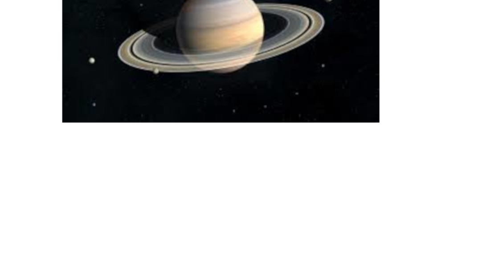
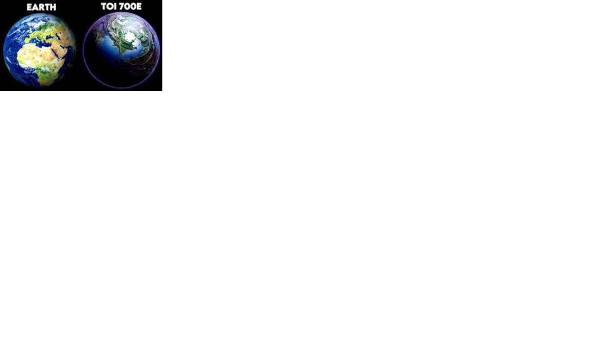

Promising Signs of Habitability
TOI 700 e, a planet discovered by NASA, has been generating considerable excitement in the scientific community. This Earth-sized world, approximately 95% the size of our planet, orbits within the habitable zone of its host star, TOI 700. This zone is often referred to as the "Goldilocks zone," where conditions might be just right for liquid water to exist, a crucial factor for life as we know it. The discovery of TOI 700 e was made possible by NASA's Transiting Exoplanet Survey Satellite (TESS). This mission has identified a range of exoplanets, but TOI 700 e stands out as a potentially habitable candidate.
What makes TOI 700 e even more intriguing is its proximity. Located about 100 light-years away from Earth, it is relatively close in astronomical terms. This close distance allows astronomers to study its atmosphere and characteristics in more detail, paving the way for potential follow-up missions. Although TOI 700 e is a rocky exoplanet and holds promise for habitability, further research is needed to confirm its suitability for life. Scientists are eager to gather more data on its atmosphere and climate to assess its potential habitability more accurately. This discovery is part of a broader effort to explore the cosmos and search for other potentially habitable planets. As technology advances and our understanding of exoplanets deepens, we inch closer to answering one of humanity's most profound questions: Are we alone in the universe? In summary, the discovery of TOI 700 e represents a significant milestone in our quest to understand the universe and find planets that might support life. While more research is needed, this Earth-sized exoplanet in the habitable zone offers hope and excitement for the future of space exploration.
